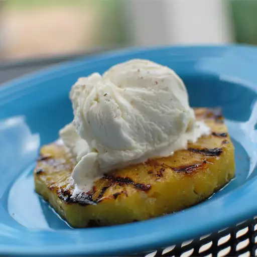

Grilled Pineapple Slices

Grilled pineapple slices are a favorite in our home. You can just eat one of these! They are so simple and so delicious!!
Ingredients:
- 1 fresh pineapple - peeled, cored and cut into rings
- 1/4 cup canned coconut milk
- 1/2 cup cinnamon sugar
Directions:
- Preheat the grill for medium heat. When the grill is hot, lightly oil the grate.
- Place the coconut milk and cinnamon sugar into separate dishes. Dip slices of pineapple into coconut milk, then coat in cinnamon sugar.
- Grill slices for 6 minutes on each side. Remove to plates, and serve.
Back